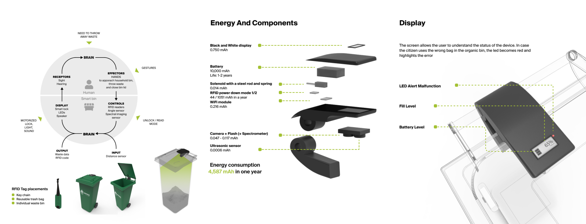

METI.
AI x waste management.
METI (Milan Ecology Trash Intelligence) is a smart collection system based on real-time waste data from collective bins that applies AI to optimize collection processes and engage citizens. We focus on the one stakeholder that lays at the intersection of citizens, municipality and recycling centers: the collection company AMSA. Having this main stakeholder in mind we designed METI, a system that exploits artificial intelligence to optimize waste collection processes in the city of Milan. This project has been selected as a 2021 RoPlastic Award Finalist! and has been exhibited at Museo Nazionale della Scienza e della Tecnologia Leonardo da Vinci as a part of Milan Design Week 2021!
Background
In 2018, Italians produced 37.3 million tonnes of waste. Of those, 1.2 million were confiscated in trials for environmental crimes. Ecomafia estimated revenues amount to 5.2 billion € per year.The illegal waste chain is a fragmented set of criminal behaviors and borderline practices entangled within the waste management system and run by criminal organizations, compliant professionals or independent companies.

Scenario
citizen will be able to access their statistics on waste and get a yearly discount on TARI for their progress but they will also experience a better scheduled collection that will improve their relationship with AMSA and their opinion of it towards a better collaboration among the parts. On the other side AMSA would be able to save resources by optimizing their activities. First by collecting waste according to quantity, and then as the AI system gathers more data and improves its clustering of information, integrate the optimization process according to quality of produced waste.

AIoT System
The system involves many sensors, which are embedded in the bins. They'll transmit the data and signals to IT center and Cloud through the network connection. In this layer, Our trained model could analyze and process waste data, which includes the internal database and also the external data, such as data from google map API. And after that, the generated information will be transmitted to the applications.
Our Ai system has 3 main layers: waste recognition, which involves CNN and SVM, and a fuzzy system for quality inference. Then we use t-sNE and evolutionary algorithm for dynamic routing.

Data and Pre-trained Model
For object recognition we found some references that worked with pre-trained models, such as ResNet and SenseNets Model and they proved to be highly accurate. Convolutional Neural Network and Support Vector Machine have been applied to these models. For the organic waste bin, the system will determine the bags material based on wavelength and transmittance recorded by the NIR spectrometer.
We found there are some labeled image datasets of household objects such as Flickr Material Database and SpectroVision Dataset, which includes over 14.000 images. But the system could also learn from pre-stored waste pictures reported by AMSA verifiers, and the weight data collected previously.

Smart Bins & Interaction Paradigm
The citizens can unlock the bin with a personal RFID tag that we designed as a multi-functional gadget that users can attach to their personal bin, or keychain, or use to close a reusable trash bag. Once waste is thrown inside and the bin is closed, the device activates its sensors: a sonar detects the fill-level of the bin, which is a good esteem of the quantity of waste, and then a camera is used in combination with image-recognition techniques for the system to understand what has just been thrown inside.
The device has a small display to communicate to the user the status of the device itself and quickly signal a severe error or a malfunction.
Final Delivery
A redesign for the PULIamo app that would also allow us to integrate the new sections and functions necessary to communicate the data streaming from our AI system.
A dashboard with a worse-case scenario where the system detects an anomaly and signals a possible truck failure or accident and the operator needs to quickly evaluate the information from the system and take immediate action. We estimated our system to save 10% of costs. With our calculations on this information we obtained a payback time of less than two years.

Team Member
Arianna Agudio: UX/UI Designer
Caterina Cavallini,: Industrial & UX/UI Designer Matteo Garagiola: UX/UI Designer & AI Reseacher Andrea Bonarini: Advisor Margherita Pillan: Advisor Venere Ferraro: Advisor Stefana Maja Broadbent: Advisor
My Keywords
#UX/UI Design
#Javascript
#Data collection